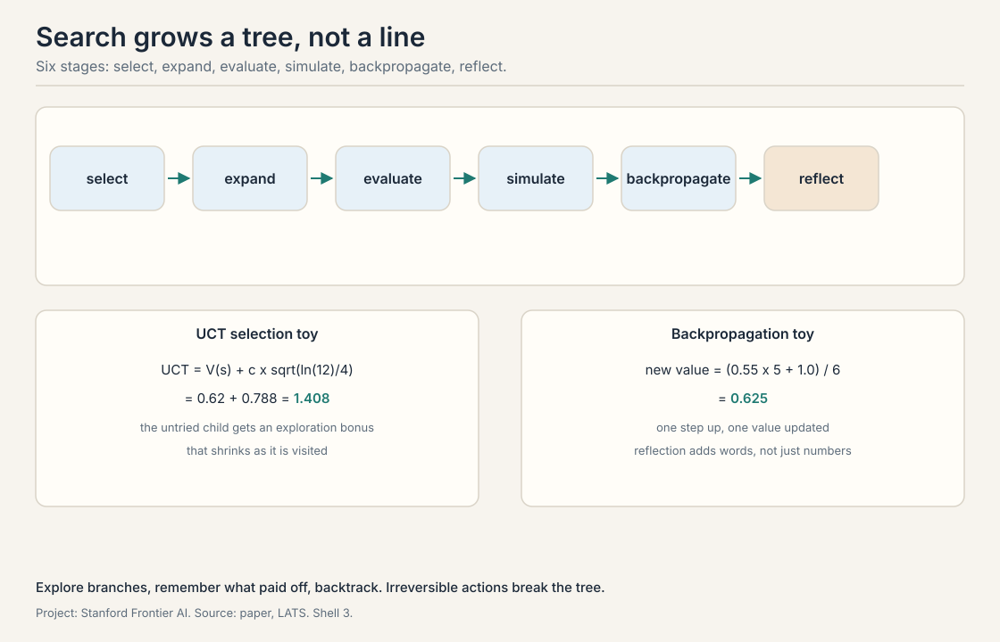
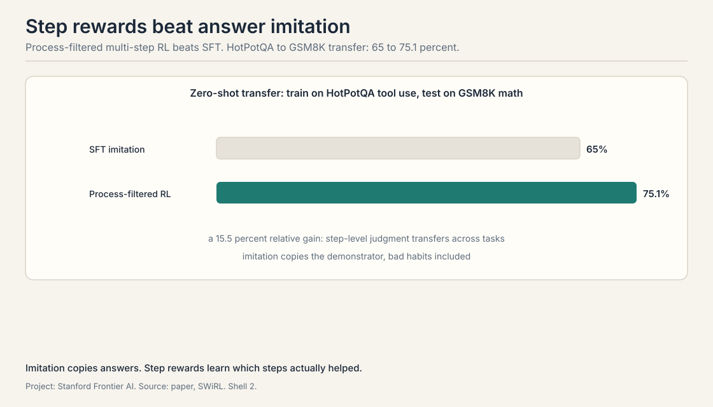

Lecture 4: Planning and Multi-Step Reasoning
Video blocked (ad-blocker or local file mode).
Watch on YouTubeVideo not loading? Watch on YouTube
LATS tree search with language agents, SPRINT on interleaved planning and parallel execution, and SWiRL on offline multi-step reinforcement learning for tool use.
Planning is search plus memory
Builds on: Lecture 3’s ReAct, which acts and thinks in a line.
A plan is a sequence of actions that reaches a goal. Planning is searching over action sequences without taking them all: think first, act once. ReAct, from Lecture 3, acts and thinks in a line. This lecture adds the tree. When actions branch, the agent should explore branches, remember which ones paid off, and backtrack. Three papers show three ways to make a language model plan.
LATS: tree search with a language agent
Builds on: Planning as search, with Monte Carlo tree search adapted to language agents.
LATS, language agent tree search, runs Monte Carlo tree search (MCTS) with a language model as the agent. MCTS is a planning algorithm that grows a search tree by simulation: it repeatedly selects a path, expands it, evaluates the new nodes, and propagates the results back up. LATS adapts it to language agents in six stages.
Selection walks down the tree from the root, at each node picking the child with the highest Upper Confidence bounds applied to Trees (UCT) score. UCT balances exploitation of good nodes against exploration of untried ones: UCT equals the node value V(s) plus c times the square root of the log of the parent’s visit count divided by the child’s visit count. A worked toy: V(s) 0.62, c 1.0, parent visited 12 times, child visited 4 times. The exploration term is the square root of ln(12)/4, about 0.788. UCT is 1.408. The untried child gets a bonus that shrinks as it is visited.
Expansion adds new child nodes: candidate actions from the current state. Evaluation scores them. The node value is the average of an LLM-judge score, the model’s own rating of the state, and self-consistency, how much the model’s samples agree. Simulation rolls out a full trajectory from the node to see where it leads. Backpropagation updates the values up the path: the new value is the old value times visits minus one, plus the return, divided by visits. A worked toy: old value 0.55, 5 visits, return 1.0. New value is (0.55 x 5 + 1.0) / 6, which is 0.625. One step up, one value updated.
The sixth stage is the paper’s addition: reflection. When a trajectory fails, the model writes a verbal summary of what went wrong, and that summary goes into the context for the next attempt. The tree remembers in words, not just in numbers.
The lecture demonstrates it on a maze: the agent plans paths, hits walls, reflects, and reroutes. On HotpotQA and WebShop it beats ReAct. The honest caveat from the lecture: the real world is not a maze. Many actions are irreversible: you cannot un-send the email to test the branch. This irreversibility breaks the tree assumption. Tree search assumes you can try and backtrack. Where actions commit, the tree is a fantasy.

SPRINT: plan a little, run a lot
Builds on: LATS tree search, adding the interleaved planning structure the models learned.
Reasoning models learned something the lecture’s authors did not expect. In SPRINT, the paper studies how models like DeepSeek-R1 plan multi-step tool tasks, and finds that their thinking length grows with training: the more the model trains, the longer it plans before acting.
The method: take 6,000 raw trajectories of planning and execution, have GPT-4o annotate the plan-versus-execution structure as a DAG, a directed acyclic graph, and supervise the model on the result. The supervision used 1,700 curated demonstrations. The structure the model learns is interleaved planning and parallelized execution: plan one step, spawn the independent tool calls in parallel, read the results, plan the next step. Not plan-everything-then-act. Not act-without-a-plan. Plan a little, run a lot, in parallel.
The numbers: on DeepSeek-R1-Distill-7B, accuracy on MATH500 rose from 89.1 to 92.5 percent, a 3.4 point gain, while sequential tokens, the tokens that must be waited for in series, fell about 40 percent, 440 fewer per task. Parallel calls do not wait for each other. The behavior transfers: the same model improved on Countdown and GPQA-Diamond, tasks it was not trained on. And the exploration pattern shifts with training: early training explores broadly, late training converges, the model learns when to stop searching.
The lecture connects this to production. Anthropic’s published SWE-bench Verified methodology for Claude Sonnet 4.5 documents an evaluation prompt telling the model to use tools as much as possible, ideally more than 100 times. That is an eval harness instruction, not the system card the lecture names [uncertain]. The industry discovered the same shape: long-horizon agents that plan in DAGs and execute in parallel.
SWiRL: multi-step RL beats imitation
Builds on: SPRINT’s planning structure, adding step-level learning instead of imitation.
SWiRL asks a sharper question: for multi-step tool tasks, is it better to imitate good trajectories or to learn from rewards? The method is offline RL: offline multi-step reinforcement learning. Offline means the trajectories are collected once, up front, not during training. Multi-step means the reward lands per step, not just at the end.
The pipeline: generate 50,000 tool-use trajectories with a strong model, Gemini 2.2T generating data for Gemma-2-27B, and score each step with an LLM-as-judge. Then filter. Outcome filtering keeps trajectories that end correctly. Process filtering keeps steps the judge rates highly. The finding: process-filtered data trains better RL policies than outcome-filtered data, and multi-step RL beats SFT, supervised fine-tuning, which just imitates the trajectories. The lecture’s headline: imitation copies the demonstrator’s habits, including the bad ones. RL on step rewards learns which steps actually helped.
The numbers, from the paper: relative accuracy gains of 21.5 percent on GSM8K, 12.3 on HotPotQA, 14.8 on CofCA, 11.1 on MuSiQue, 15.3 on BeerQA. The zero-shot transfer result is the striking one: train on HotPotQA tool use, test on GSM8K math with no HotPotQA in the prompt, and accuracy rises from 65 to 75.1 percent, a 15.5 percent relative gain. Step-level judgment transfers across tasks. Imitation of answers does not.

Parent visited 12 times, c 1.0. Child A: value 0.62, visited 4 times. Child B: value 0.55, visited 1 time. UCT of A is 0.62 plus sqrt(ln(12)/4), which is 0.62 + 0.788 = 1.408. UCT of B is 0.55 plus sqrt(ln(12)/1), which is 0.55 + 1.576 = 2.126. B wins despite the lower value: it is nearly unexplored, and the bonus dominates. That is the point of UCT: optimism under uncertainty. When the value estimates are systematically wrong. UCT explores, but its optimism is bounded by c. If the judge scores a good branch badly every time, the exploration bonus decays with visits and the tree settles on the wrong branch. The search is only as good as the evaluator.
Numbers remember that a branch failed. Words remember why. A failed trajectory’s value update says “this path is bad”. The reflection says “this path is bad because the search assumed the store was open on Sundays”. The next attempt starts with the lesson in context, not just the penalty in the tree. The lecture presents this as the paper’s contribution: verbal memory on top of statistical memory. It grows. Every reflection adds context, and long contexts cost tokens and attention. Worse, old reflections can contradict new situations. The tree’s numbers decay cleanly with visits. Words do not decay at all.
The model plans one step, launches the independent tool calls in parallel, reads the results, and plans the next step. On MATH500 the 7B model went from 89.1 to 92.5 percent accuracy while sequential tokens fell 40 percent, 440 fewer per task. Accuracy rose because the plan adapted to each step’s results. Sequential tokens fell because parallel calls do not wait for each other. The DAG structure is the mechanism for both. The world answers back. A full up-front plan commits to branches whose results are unknown. Interleaving keeps the plan one step ahead of the observations, so a failed tool call rewrites the next step instead of invalidating the whole plan.
Outcome filtering keeps trajectories that end right. Some of them got there by luck: bad steps, right answer. Training on those teaches the bad steps. Process filtering keeps steps the judge rates highly, so the learner sees which moves helped. The paper’s result: multi-step RL on process-filtered data beats both outcome-filtered RL and SFT imitation. The unit of learning is the step, not the trajectory. A judgment per step of 50,000 trajectories. That is the price of the whole method: step-level labels at scale. The lecture’s bet is that the transfer result, 65 to 75.1 percent across tasks, repays it.
When actions are irreversible. LATS assumes the agent can simulate branches and backtrack. Sending an email, charging a card, publishing a post: these commit. The tree cannot try them. The lecture’s maze demo is honest about this: the method shines where simulation is free and the world forgives. Caution and verification before acting: critics, rankers, and verifiers from the Archon menu, applied to the single planned action instead of a tree of them. Search moves from the action space to the verification space.
LATS adds search to the agent: explore branches, remember in numbers and words. SPRINT adds structure to the search: interleave planning with parallel execution along a DAG. SWiRL adds learning to the steps: train on step rewards, not imitation. Search finds the plan. Structure makes it cheap. Step rewards make it learnable. The lecture’s arc: from planning as inference to planning as training. SWiRL. The loop needs training signal per step, and process-filtered multi-step RL is the lecture’s best candidate for that signal at scale.
Because nothing told the model to think longer. The reward was on answers, not on trace length. The model discovered that longer planning pays, and training amplified the discovery. It is emergence at the behavioral level: not a capability appearing at a size threshold, but a strategy appearing at a training threshold. No. The SPRINT result pairs longer thinking with fewer sequential tokens: the thinking got more parallel, not just longer. Length without structure is just cost.
Recap: the whole lesson on one screen
- Search the tree. LATS runs MCTS with a language agent: select by UCT, expand, evaluate, simulate, backpropagate, reflect. Toy UCT 1.408. Toy backprop 0.625.
- Remember in words. Reflection stores why a branch failed, not just that it did. Numbers decay. Words do not.
- Plan a little, run a lot. SPRINT interleaves planning with parallel execution. MATH500 89.1 to 92.5 percent, 40 percent fewer sequential tokens.
- Steps beat trajectories. SWiRL: process-filtered multi-step RL beats SFT imitation. HotPotQA to GSM8K transfer: 65 to 75.1 percent.
- Search assumes forgiveness. Irreversible actions break tree search. Verify before committing instead.
- The arc. Planning as inference, then as structure, then as training. The loop needs the third.
Used where, as of October 2026
- Claude Sonnet 4.5 (2025): Anthropic’s published eval methodology instructs 100+ tool calls per task, an eval prompt instruction rather than the system card the lecture names [uncertain], the production form of interleaved planning and parallel execution.
- DeepSeek-R1 family: the thinking-length growth SPRINT studies is visible in the open reasoning models, and the SPRINT supervision recipe targets exactly them.
- RLVR pipelines: reinforcement learning on verifiable rewards, the dominant 2025-2026 paradigm (agentic-RL survey, 2026). DeepSeek-R1 (January 2025) made RLVR plus GRPO the default industry template through 2025-2026. Step-level rewards and process filtering extend the recipe to tool-using agents.
- Coding agents: Codex runs many coding tasks in parallel in isolated cloud sandboxes (Wikipedia, October 2026). Anthropic’s agent guidance lists parallelization, sectioning work and running the parts at once, as a standard production pattern (Anthropic, December 2024).
Official sources and further reading
Official: - CS329A Part 5: Planning and Multi-Step Reasoning (Autumn 2025). https://www.youtube.com/watch?v=Ml_fp9XkB8Y
Further reading: - Zhou et al., “LATS” (2023). https://arxiv.org/abs/2310.04406 - “SPRINT” (2025). https://arxiv.org/abs/2506.05745 - Goldie et al., “SWiRL” (COLM 2025). https://arxiv.org/abs/2504.04736
Caveats from these sources. The SPRINT supervision used 1,700 curated demonstrations from 6,000 raw trajectories: the lecture reports both numbers. The SWiRL gains are relative accuracy as reported in the paper. The Claude 100+ tool calls figure is from Anthropic’s published SWE-bench Verified methodology, an eval prompt instruction, not the system card the lecture names [uncertain].
Connections to the other courses
- CS329Z: tree search and planning from the builder side: how agents explore and backtrack in practice. This lecture adds the algorithms and the training.
- CS229: search algorithms and dynamic programming: the classical roots of MCTS and UCT.
- CS329H: reward models and preference learning: the machinery behind the LLM-as-judge that SWiRL depends on.
Sources
- LECTURECS329A Part 5: Planning and Multi-Step Reasoning (Autumn 2025, published 2026-08)
- PAPERZhou et al., Language Agent Tree Search Unifies Reasoning Acting and Planning in Language Models (2023)
- PAPERSPRINT: Enabling Interleaved Planning and Parallelized Execution in Reasoning Models (2025)
- PAPERGoldie et al., SWiRL: Synthetic Data Generation and Multi-Step RL for Reasoning and Tool Use (COLM 2025)